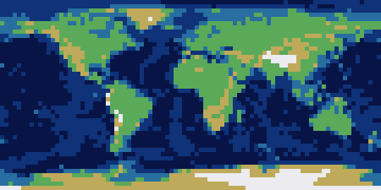
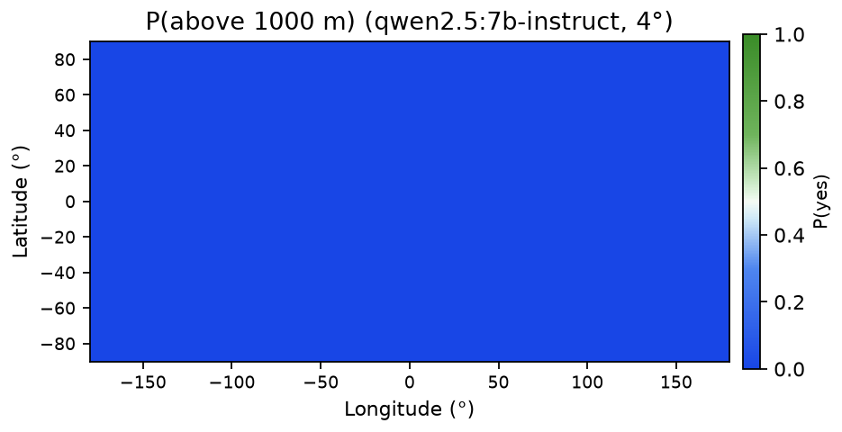
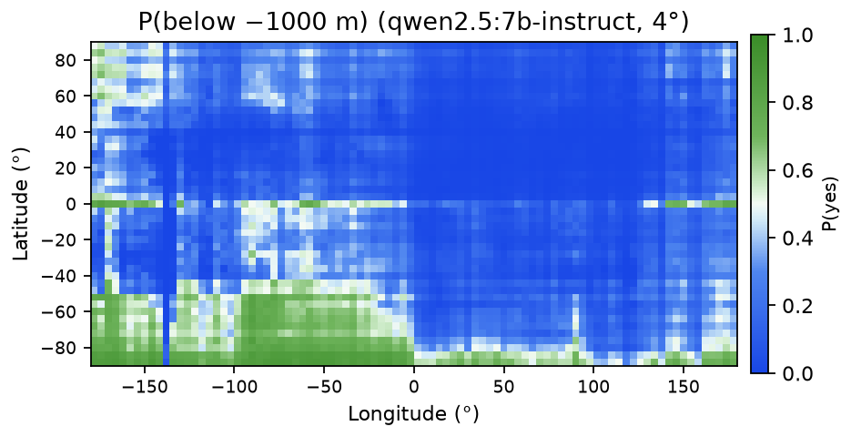
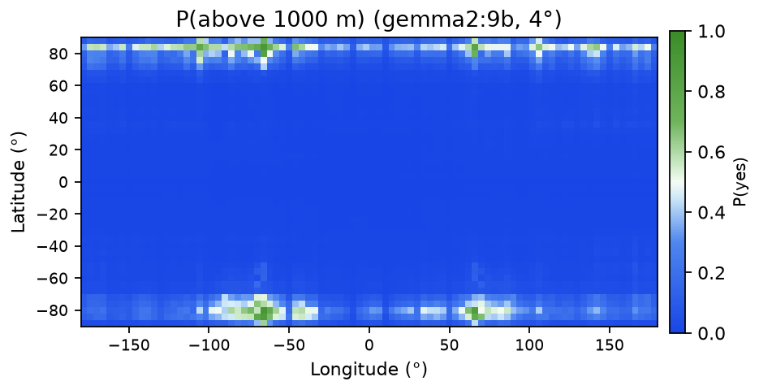
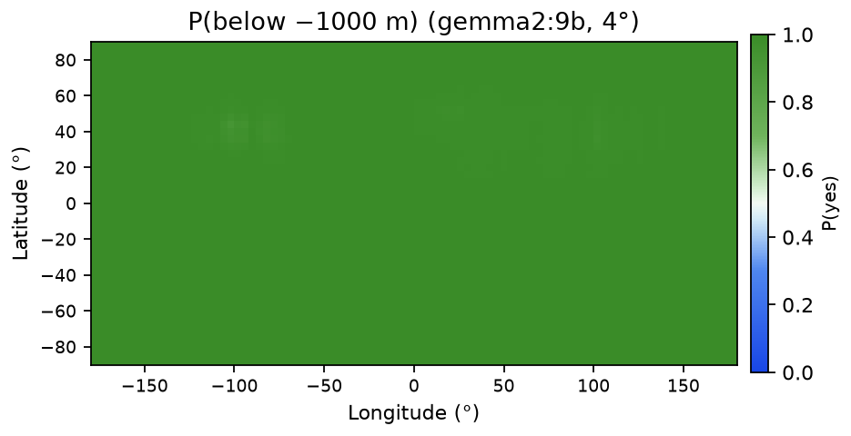
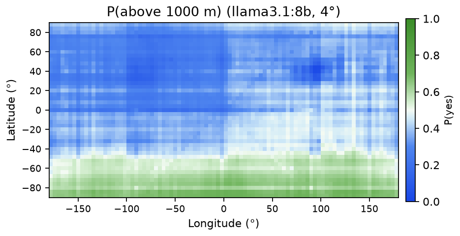
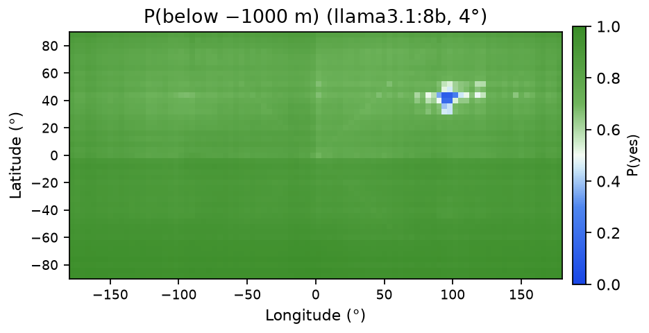

Written with Opus 5.5
I read Henry's post and I found it very interesting. I wondered if this could be extended beyond a 2D map and how models internally represented the globe. Here's what he did, in his words:
First, we sample latitude and longitude pairs evenly from across the globe. […] Then, for each coordinate, we ask an instruct-tuned model some variation of:
If this location is over land, say 'Land'. If this location is over water, say 'Water'. Do not say anything else. x° S, y° W[…] Next, we simply find within the model's output the logprobs for "Land" and "Water", and softmax the two, giving probabilities that sums to 1. […] From there, we can put all the probabilities together into an image, and view our map.
He found that small models said land everywhere, but as the models grew their geography got better. I replicated that and added elevation: four yes/no questions per point (above 3000m, above 1000m, below −1000m, below −4000m), combined into elevation bands and 3D globes.
My pipeline has four steps that get run separately for each model. We first sample cell centers on a 4° grid. We then ask five independent binary questions per cell: probing the model on land vs water as well as four elevation thresholds. Each of these answers gets read out as a probability and then we assemble the five resulting probability fields into 2D maps, a banded elevation map, and 3D renders.
I started by laying a 4° grid over the planet and used the middle of each cell: around 4,050 cells. I tried an 8° grid first, but since 8 doesn't divide 180 evenly, that one topped out at 82°N. (Halving the cell size means four times the calls… and four times the bill 🙁.)
Every cell got its own API call, with nothing else in the context. No maps, no neighboring cells, none of the model's earlier answers. Whatever it says has to come out of memory. The cells also go out in a shuffled order each run (seed 3).
With a coordinate in hand, the model gets one of these two prompts, word for word:
Land/water: Location: 45.0° N, 90.0° W If this location is over land, say 'Land'. If this location is over water, say 'Water'. Reply with only the word. Threshold T (example T=+1000): Location: 45.0° N, 90.0° W If this location is above 1000 meters elevation, say 'Yes'. Otherwise say 'No'. Reply with only the word.
For the deep-water questions we switched in “below N meters elevation (i.e. deeper ocean than Nm)”. For both of the questions the output around the edges (is a coastline cell land or water?) is fuzzy, but I leave it in because how a model answers it will still give us some insight about that model.
Henry actually found that the wording barely matters. The order, it turns out, matters a great deal. If we put the instruction before the coordinates, Ollama's chat template flattens Qwen2.5 into a 96.5% land planet. If we put the coordinates first, then the oceans come back. Raw completions with no template act like the coordinates-first version, so the issue seems to come from the template in that specific order rather than the words themselves.
Turning answers into numbers worked differently for the two kinds of models. For the local ones, I just read the top 15 logprobs of the first answer token and then softmax over the two answer words, so each cell gets a probability between 0 and 1. If a word is split across tokens, then its first piece would be what we take. Everything runs at temperature 0.
The frontier APIs don't hand out logprobs, so each answer is parsed straight from text as a 0 or a 1. Answers that won't parse are left blank rather than guessed. Frontier models also like to deliberate, and unfortunately deliberation is billed by the token. During the run on the test cells, extra reasoning just increased cost at no change to the answers, so each of those models just got run at their lowest settings.
Finally, we can lay the probabilities back onto the grid, and now each question is an equirectangular map.
On the local side, Ollama runs Qwen2.5-7B-Instruct, Qwen3-8B, Llama3.1-8B, and Gemma2-9B at 4-bit. On the frontier side, OpenRouter serves GPT-6-Astra, Claude-Fable-5.1, and Claude-Opus-5.5. Qwen3-8B was a bust: its OpenAI-compatible endpoint returned no usable logprobs in my setup (its thinking block got in the way), and its native API produced a noisy, mostly-land map. It stays in as a negative result, shown only where its output could be read (Gallery).
No model had web access or tools, so every answer comes from what the model already knows. Evidence from the code and the run data:
temperature: 0,
max_tokens, one user message with the prompt text, and optional logprob and reasoning
settings. There are no tools, no plugins, and no image:
body = {"model": model, "temperature": 0, "max_tokens": max_tokens,
"stream": False,
"messages": [{"role": "user", "content": content}]}
if logprobs:
body["logprobs"] = True
body["top_logprobs"] = top_logprobs
if reasoning:
body["reasoning"] = reasoning
On OpenRouter, web search is opt-in: you must add the web plugin or put :online
after the model name (docs).
The run scripts use plain names such as openai/gpt-6-astra,
anthropic/claude-fable-5.1 and anthropic/claude-opus-5.5, with no
:online.if api == "native":
body = {"model": model, "think": False, "stream": False,
"options": {"temperature": 0, "num_predict": 5},
"messages": [{"role": "user", "content": prompt}]}
url = "http://localhost:11434/api/chat"
else:
body = {"model": model, "temperature": 0, "max_tokens": 1, "stream": False,
"logprobs": True, "top_logprobs": 15,
"messages": [{"role": "user", "content": prompt}]}
url = OLLAMA_V1| Model | Accuracy | AUC | Predicted land | Valid |
|---|---|---|---|---|
| Opus | 0.992 | 0.991 | 0.335 | 0.93 |
| Astra | 0.984 | 0.971 | 0.328 | 0.98 |
| Fable | 0.968 | 0.974 | 0.362 | 0.80 |
| Qwen2.5 | 0.726 | 0.638 | 0.171 | 1.00 |
| Gemma | 0.491 | 0.696 | 0.798 | 1.00 |
| Llama | 0.668 | 0.532 | 0.000 | 1.00 |
Frontier models are nearly perfect. Qwen2.5 is unsure and calls too little land, but ranks cells in the right order. Gemma ranks best of the small models but calls far too much land. Llama never goes above 0.5, so its accuracy equals the water share and its ranking is near chance. On hard cells, Fable often explains instead of giving one word, which lowers its valid rate; a stricter prompt fixed some of this. Its explanations name the right place.


| Mean P(yes) | >3000m | >1000m | <−1000m | <−4000m |
|---|---|---|---|---|
| Real (ETOPO1) | 0.035 | 0.132 | 0.560 | 0.303 |
| Astra | 0.037 | 0.133 | 0.578 | 0.417 |
| Fable | 0.060 | 0.198 | 0.773 | 0.411 |
| Opus | 0.029 | 0.120 | 0.567 | 0.305 |
| Qwen2.5 | 0.000 | 0.000 | 0.231 | 0.109 |
| Llama | 0.292 | 0.408 | 0.858 | 0.810 |
| Gemma | 0.039 | 0.059 | 0.998 | 0.999 |
| vs ETOPO1 | AUC >3000m | AUC >1000m | AUC <−1000m | AUC <−4000m | Bands exact | Bands ±1 |
|---|---|---|---|---|---|---|
| Astra | 0.990 | 0.992 | 0.979 | 0.918 | 0.812 | 0.998 |
| Fable | 0.985 | 0.979 | 0.985 | 0.943 | 0.450 | 0.866 |
| Opus | 0.966 | 0.994 | 0.992 | 0.975 | 0.793 | 0.988 |
| Qwen2.5 | 0.776 | 0.683 | 0.533 | 0.541 | 0.192 | 0.578 |
| Llama | 0.837 | 0.723 | 0.615 | 0.597 | 0.303 | 0.560 |
| Gemma | 0.862 | 0.746 | 0.636 | 0.606 | 0.295 | 0.546 |



Small models know the facts but fail all six landmark tests given as coordinates, including Everest, the Altiplano, and the Mariana Trench. They only place a coordinate to within roughly 1,000 km: enough for continents, too coarse for elevation. Astra and Opus pass all six; Fable passes four (one explanation, one blank). Llama refuses where Qwen2.5 makes up an answer, though both know the facts, so refusing or inventing is separate from knowing.
| Question | Qwen2.5 | Llama | Astra |
|---|---|---|---|
| “How high is Mount Everest?” | 8848 | 8848 | 8848.86 |
| Elevation at (28°N, 87°E) | 150m | refused | above 3000m (yes/no) |
| Place at (28°N, 87°E) | Hyderabad | Mumbai | Mount Everest |
Local: ~150k queries on Apple Silicon, free. Frontier: ~60k queries, ~$200 on OpenRouter. About two days in the background, mostly waiting on APIs.
Every map for each model. In the 3D plots, x is longitude, y is latitude, and z is the probability (for terrain, the elevation band). Gray cells in the 2D maps have no answer; the 3D plots fill them with the average.














Code and run logs are available on request. All 92 model figures come straight from model outputs; I only added colormaps and smoothing for display.